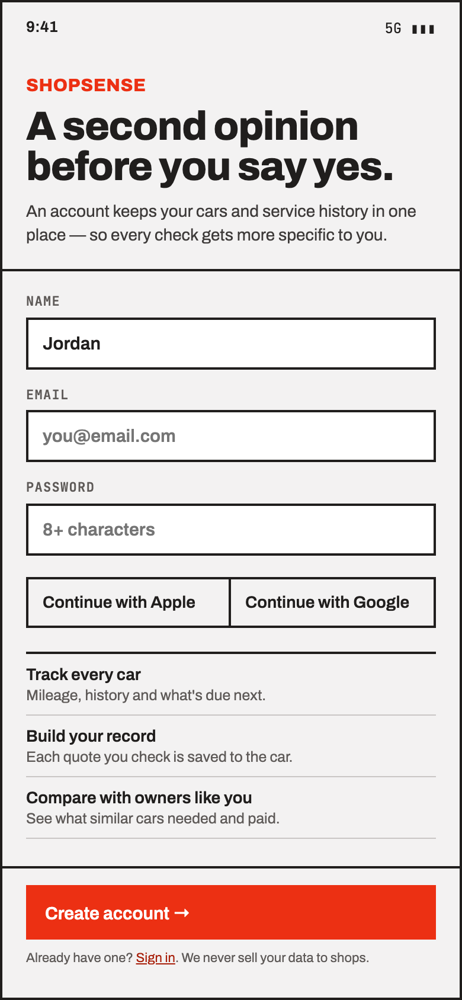
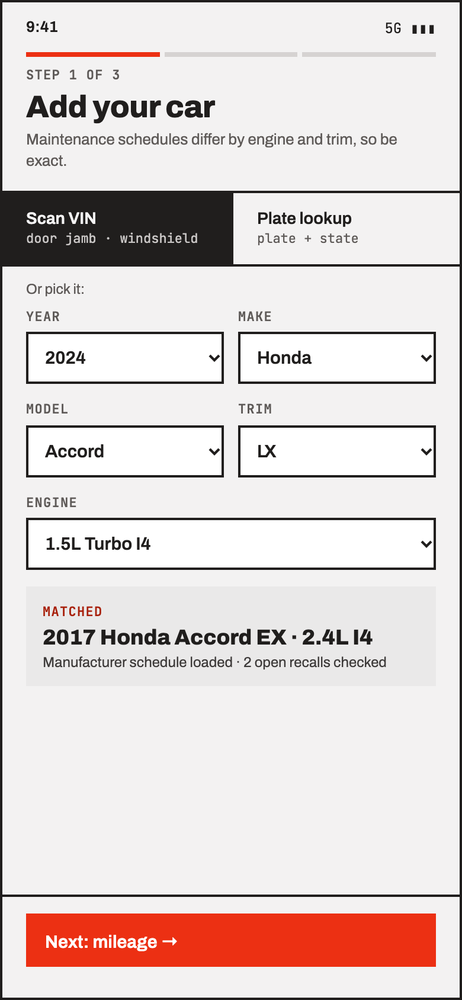
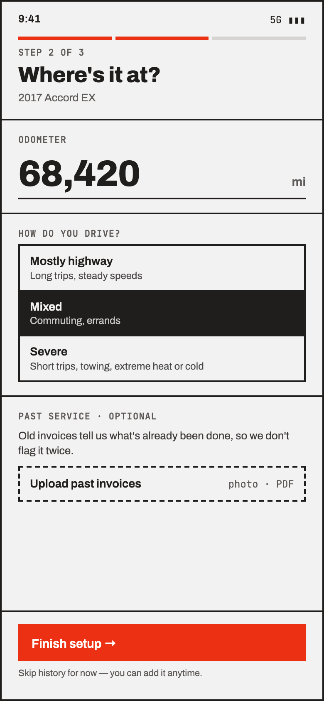
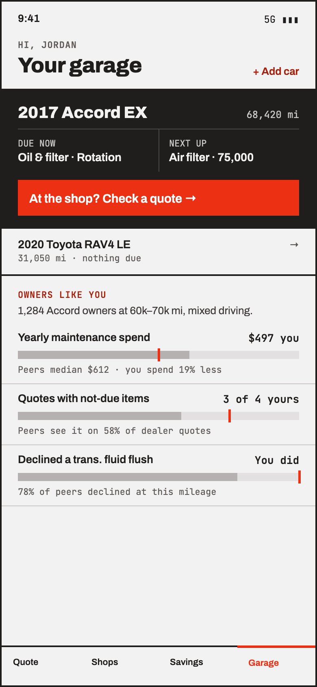
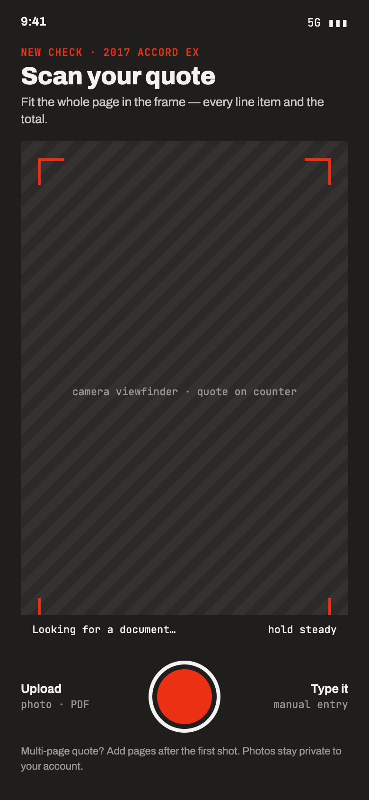
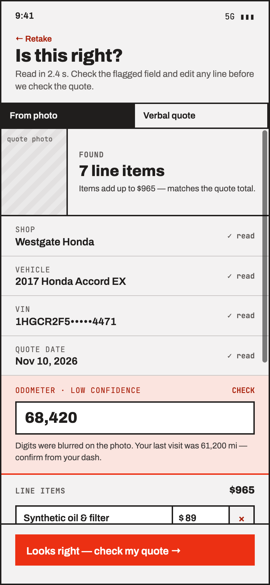
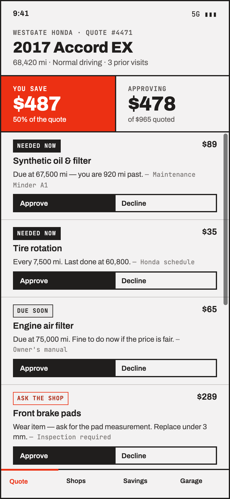
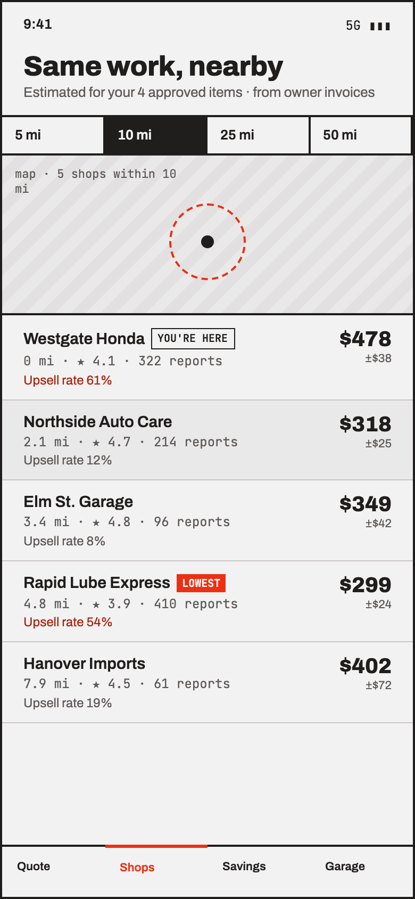
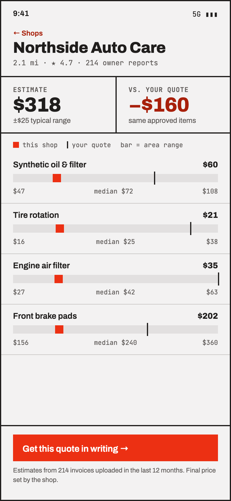
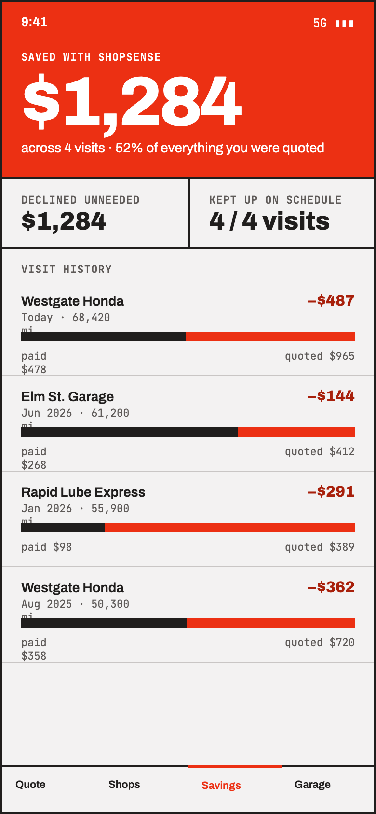

An independent second opinion on repair quotes, right at the service counter.
Know quickly what my car actually needs at its mileage, so I approve the right work without overpaying or skipping something important.
The time and cost of turning scattered maintenance knowledge into a personal answer at the moment of decision.
Unbiased, vehicle-specific expertise. Today it sits mostly with the people selling the service.










Each checked quote adds to the car's record, so the next verdict is more confident.
"Owners like you" compares spend, upsells seen and decisions for the same model and mileage band.
Each visit shows paid vs. quoted, so the value of every check stays visible.